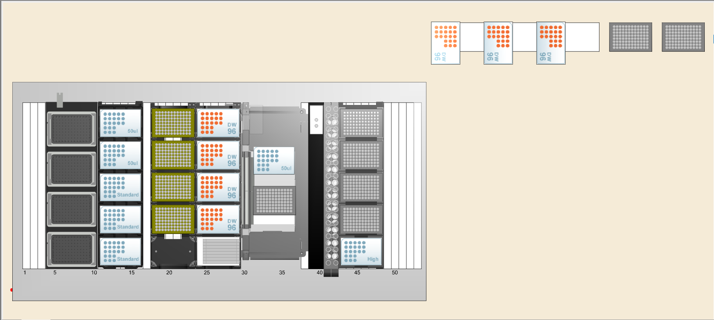

Inoculation Protocol#
Community Assembly#
Method#
Navigate to shortcuts and click on ‘Bacteria Culture Workflow’ then ‘Inoculation via worklist’
Select desired worklist-ensure it is ordered with media/water aliquots first (see multidispense best practices)
Load input and destination lab ware (culture tubes, 96 well plate, etc)
Begin the run
The Hamilton will run the water/media aliquots first, then aliquot the appropriate volume of cultures
Layout#

Worklist Generation#
We developed an internal-use package to automate worklist generation in a consistent and reliable way for all kinds of experimental designs. The package is called worklistgen. (This is a work in progress, as we continue adding new features and fixing bugs. If you have any suggestions, please let us know.)
Usage Example#
# import worklistgen and other necessary libraries
import pandas as pd
from worklistgen.core import Source, Destination, Worklist
import random
from itertools import combinations
We want to set up everything for creating our worklist.
First, let’s define the species and media that we are going to use in our experiment.
# Define Species
species = ['EF', 'FP', 'BO', 'CD', 'DI', 'EL',
'BU', 'AC', 'GH', 'IJ', 'KL', 'MN',
'OP', 'QR', 'ST', 'UV', 'WX', 'YZ']
# Define Media
media = ['DM38', 'LB', 'M9', 'M9Glucose',
'M9Glycerol', 'M9Acetate', 'M9Propionate', 'M9Butyrate']
Now, we need to define our sources. We do this using the Source class. The Source class takes the following parameters:
name: The name (prefix) of the source. This is used to identify the source in the worklist.source_type: The type of the source. This can be either"species"or"media".labware_type: The type of labware used for the source. Different labware types have different predefined layouts.input: A list of inputs.
The main attribute of the Source class is well_map, which contains the information about the location of each input in the labware.
Note that we have two sources: one for the species and one for the media. The species source contains the species we are going to be using in our experiment, and the media source contains the media conditions we are going to be using in our experiment. The species source is a 96-well plate, and the media source is a 24-tube trough.
# Define sources
source1 = Source(name='species_source', source_type='species', labware_type='96wellplate', input=species)
source2 = Source(name='media_source', source_type='media', labware_type='tuberack', input=media)
Lets check the well_map of our sources.
source1.well_map.head(5)
| Source_type | Input | Well | Name | Labware_type | |
|---|---|---|---|---|---|
| 0 | species | EF | A1 | species_source-1 | 96wellplate |
| 1 | species | FP | B1 | species_source-1 | 96wellplate |
| 2 | species | BO | C1 | species_source-1 | 96wellplate |
| 3 | species | CD | D1 | species_source-1 | 96wellplate |
| 4 | species | DI | E1 | species_source-1 | 96wellplate |
source2.well_map.head(5)
| Source_type | Input | Well | Name | Labware_type | |
|---|---|---|---|---|---|
| 0 | media | DM38 | A1 | media_source-1 | tuberack |
| 1 | media | LB | A2 | media_source-1 | tuberack |
| 2 | media | M9 | A3 | media_source-1 | tuberack |
| 3 | media | M9Glucose | A4 | media_source-1 | tuberack |
| 4 | media | M9Glycerol | A5 | media_source-1 | tuberack |
Now, we are going to define the location of each of the experimental conditions in the labware. We do this using the Destination class. The Destination class takes the following parameters:
name: The name (prefix) of the destination. This is used to identify the destination in the worklist.labware_type: The type of labware used for the destination. Different labware types have different predefined layouts.experiements: Data frame containing the experimental conditions. The first column should contain the species separated by “-” (community) and the second column should contain the media conditions separated by “-” (condition). The rest of the columns will be ignored.blanks: List of blanks to include.replicates: Number of replicates per experiemntal combination.blanks_replicates: Number of replicates per blank.
Once again, the most importat attribute of the Destination class is well_map, which contains the information about the location of each input in the labware.
Here we are going to generate the experiemnts data frame randomly, but you can also use your own table. The only requirement is that the first column contains the species separated by “-” (community) and the second column contains the media conditions separated by “-” (condition). The rest of the columns will be ignored.
# Randomly generate communities
community_combinations = []
for size in range(1, len(species) + 1):
community_combinations.extend(combinations(species, size))
random_communities = random.sample(community_combinations, 60)
communities = ['-'.join(community) for community in random_communities]
# Randomly generate conditions
condition_combinations = []
for size in range(1, len(media) + 1):
condition_combinations.extend(combinations(media, size))
random_conditions = random.sample(condition_combinations, 60)
conditions = ['-'.join(condition) for condition in random_conditions]
# Build the experiments DataFrame
experiments = pd.DataFrame({
'community': communities,
'condition': conditions,
})
experiments.head(10)
| community | condition | |
|---|---|---|
| 0 | FP-CD-BU-GH-IJ-KL-OP-QR-YZ | M9Glucose-M9Glycerol |
| 1 | EF-FP-BO-DI-BU-AC-IJ-MN-QR-ST-YZ | DM38-M9-M9Glucose-M9Propionate |
| 2 | EF-BO-CD-EL-BU-GH-IJ-OP-QR-ST-UV-YZ | DM38-M9-M9Propionate |
| 3 | FP-CD-DI-EL-BU-AC-GH-MN-OP-UV-WX-YZ | LB-M9Acetate |
| 4 | EF-BO-CD-DI-GH-KL-ST | LB-M9Acetate-M9Butyrate |
| 5 | EF-FP-CD-DI-EL-BU-KL-OP-QR-UV-YZ | M9Glucose-M9Butyrate |
| 6 | BO-EL-GH-KL-MN-ST-UV | LB-M9-M9Glucose-M9Glycerol-M9Acetate-M9Butyrate |
| 7 | EF-FP-EL-IJ-UV-YZ | M9-M9Glycerol-M9Propionate |
| 8 | BO-GH-IJ-MN-UV-WX-YZ | DM38-LB-M9Glucose-M9Propionate |
| 9 | EF-DI-BU-AC-GH-MN-UV-WX-YZ | M9-M9Glucose-M9Glycerol-M9Acetate-M9Butyrate |
Now, lets create or destination object and check its well_map.
# Define destination
destination = Destination(name='destination', labware_type='96wellplate', experiments=experiments, blanks=['M9Propionate', 'M9Butyrate'], replicates=3, blanks_replicates=2)
destination.well_map.head(10)
| Community | Condition | Replicate | Well | Name | Labware_type | |
|---|---|---|---|---|---|---|
| 0 | blank | M9Propionate | 1 | A1 | destination-1 | 96wellplate |
| 1 | blank | M9Propionate | 2 | B1 | destination-1 | 96wellplate |
| 2 | blank | M9Butyrate | 1 | C1 | destination-1 | 96wellplate |
| 3 | blank | M9Butyrate | 2 | D1 | destination-1 | 96wellplate |
| 4 | FP-CD-BU-GH-IJ-KL-OP-QR-YZ | M9Glucose-M9Glycerol | 1 | E1 | destination-1 | 96wellplate |
| 5 | FP-CD-BU-GH-IJ-KL-OP-QR-YZ | M9Glucose-M9Glycerol | 2 | F1 | destination-1 | 96wellplate |
| 6 | FP-CD-BU-GH-IJ-KL-OP-QR-YZ | M9Glucose-M9Glycerol | 3 | G1 | destination-1 | 96wellplate |
| 7 | EF-FP-BO-DI-BU-AC-IJ-MN-QR-ST-YZ | DM38-M9-M9Glucose-M9Propionate | 1 | H1 | destination-1 | 96wellplate |
| 8 | EF-FP-BO-DI-BU-AC-IJ-MN-QR-ST-YZ | DM38-M9-M9Glucose-M9Propionate | 2 | A2 | destination-1 | 96wellplate |
| 9 | EF-FP-BO-DI-BU-AC-IJ-MN-QR-ST-YZ | DM38-M9-M9Glucose-M9Propionate | 3 | B2 | destination-1 | 96wellplate |
Finally, we create the Worklist object. The Worklist class takes the following parameters:
name: The name of the worklist.total_volume: Total volume of each well.
Because we can have several sources and destinations, we need to add them to the worklist. We do this using the add_source() and add_destination() methods. After that, we can generate the worklist using the generate_worklist() method.
# Create worklist
worklist = Worklist(name='worklist', total_volume=100)
worklist.add_source(source1)
worklist.add_source(source2)
worklist.add_destination(destination)
# Generate worklist
worklist.generate_worklist()
worklist.worklist_df
| Source_plate_Name | Source_Plate_Type | Source_Plate_Well | Destination_plate_Name | Destination_Plate_Type | Destination_Plate_Well | Transfer_Volume | |
|---|---|---|---|---|---|---|---|
| 0 | media_source-1 | tuberack | A7 | destination-1 | 96wellplate | A1 | 100.000000 |
| 1 | media_source-1 | tuberack | A7 | destination-1 | 96wellplate | B1 | 100.000000 |
| 2 | media_source-1 | tuberack | A8 | destination-1 | 96wellplate | C1 | 100.000000 |
| 3 | media_source-1 | tuberack | A8 | destination-1 | 96wellplate | D1 | 100.000000 |
| 4 | species_source-1 | 96wellplate | B1 | destination-1 | 96wellplate | E1 | 11.111111 |
| ... | ... | ... | ... | ... | ... | ... | ... |
| 2330 | species_source-1 | 96wellplate | D2 | destination-2 | 96wellplate | H11 | 14.285714 |
| 2331 | species_source-1 | 96wellplate | E2 | destination-2 | 96wellplate | H11 | 14.285714 |
| 2332 | species_source-1 | 96wellplate | B3 | destination-2 | 96wellplate | H11 | 14.285714 |
| 2333 | media_source-1 | tuberack | A1 | destination-2 | 96wellplate | H11 | 50.000000 |
| 2334 | media_source-1 | tuberack | A5 | destination-2 | 96wellplate | H11 | 50.000000 |
2335 rows × 7 columns
Stamp#
Method#
Load input and destination plates (specify locations with dialogue box)
Navigate to shortcuts and click on ‘Bacteria Culture Workflow’ then ‘Inoculation/Sample Prep v2.3’
Select Plate Stamp
Select method parameters
Specify input and destination lab ware types and locations
Specify volume to transfer
Specify mix on source trough and number of cycles
Begin the run
The Hamilton will stamp one by one from input(s) to destination plate and the run will finish
Layout#
Normalization#
Method#
After SYBR DNA quantification excel sheet has been generated, run Hamilton_gDNA_normalization.py to generate worklist
Navigate to shortcuts and click on ‘Bacteria Culture Workflow’ then ‘Inoculation via worklist’
Load source DNA plate, water trough, and destination normalization plate
Begin the run
The Hamilton will run the water aliquots first, then aliquot the appropriate volume of DNA to normalize it.
Layout#
Worklist Generation#
!python 250605_Hamilton_gDNA_normalization.py --excel gDNA_concentrations_calculation_matrix.xlsx --tag my_exp
Traceback (most recent call last):
File "/home/acs98/miniconda3/envs/jupyter-book/lib/python3.13/site-packages/pandas/compat/_optional.py", line 135, in import_optional_dependency
module = importlib.import_module(name)
File "/home/acs98/miniconda3/envs/jupyter-book/lib/python3.13/importlib/__init__.py", line 88, in import_module
return _bootstrap._gcd_import(name[level:], package, level)
~~~~~~~~~~~~~~~~~~~~~~^^^^^^^^^^^^^^^^^^^^^^^^^^^^^^
File "<frozen importlib._bootstrap>", line 1387, in _gcd_import
File "<frozen importlib._bootstrap>", line 1360, in _find_and_load
File "<frozen importlib._bootstrap>", line 1324, in _find_and_load_unlocked
ModuleNotFoundError: No module named 'openpyxl'
During handling of the above exception, another exception occurred:
Traceback (most recent call last):
File "/home/acs98/Documents/Venturelli-lab/hamilton-robot/hamilton-manual/250605_Hamilton_gDNA_normalization.py", line 204, in <module>
sheet1 = load_sheet1(EXCEL_FILE_PATH)
File "/home/acs98/Documents/Venturelli-lab/hamilton-robot/hamilton-manual/250605_Hamilton_gDNA_normalization.py", line 72, in load_sheet1
xlsx = pd.ExcelFile(filename)
File "/home/acs98/miniconda3/envs/jupyter-book/lib/python3.13/site-packages/pandas/io/excel/_base.py", line 1567, in __init__
self._reader = self._engines[engine](
~~~~~~~~~~~~~~~~~~~~~^
self._io,
^^^^^^^^^
storage_options=storage_options,
^^^^^^^^^^^^^^^^^^^^^^^^^^^^^^^^
engine_kwargs=engine_kwargs,
^^^^^^^^^^^^^^^^^^^^^^^^^^^^
)
^
File "/home/acs98/miniconda3/envs/jupyter-book/lib/python3.13/site-packages/pandas/io/excel/_openpyxl.py", line 552, in __init__
import_optional_dependency("openpyxl")
~~~~~~~~~~~~~~~~~~~~~~~~~~^^^^^^^^^^^^
File "/home/acs98/miniconda3/envs/jupyter-book/lib/python3.13/site-packages/pandas/compat/_optional.py", line 138, in import_optional_dependency
raise ImportError(msg)
ImportError: Missing optional dependency 'openpyxl'. Use pip or conda to install openpyxl.
gDNA worklist:
gDNA_worklist = pd.read_csv('my_exp_gDNA.csv')
gDNA_worklist.head(10)
| Source_plate_Name | Source_Plate_Type | Source_Plate_Well | Desination_plate_Name | Destination_Plate_Type | Destination_Well | Transfer_Volume | Tip_Size | Liquid_Class | |
|---|---|---|---|---|---|---|---|---|---|
| 0 | 96raw | RCK_CulturePlate_00 | A1 | 96norm | RCK_PCRPlate_00 | A1 | 4 | 300 | Water |
| 1 | 96raw | RCK_CulturePlate_00 | B1 | 96norm | RCK_PCRPlate_00 | B1 | 16 | 300 | Water |
| 2 | 96raw | RCK_CulturePlate_00 | C1 | 96norm | RCK_PCRPlate_00 | C1 | 16 | 300 | Water |
| 3 | 96raw | RCK_CulturePlate_00 | D1 | 96norm | RCK_PCRPlate_00 | D1 | 31 | 300 | Water |
| 4 | 96raw | RCK_CulturePlate_00 | E1 | 96norm | RCK_PCRPlate_00 | E1 | 15 | 300 | Water |
| 5 | 96raw | RCK_CulturePlate_00 | F1 | 96norm | RCK_PCRPlate_00 | F1 | 19 | 300 | Water |
| 6 | 96raw | RCK_CulturePlate_00 | G1 | 96norm | RCK_PCRPlate_00 | G1 | 50 | 300 | Water |
| 7 | 96raw | RCK_CulturePlate_00 | H1 | 96norm | RCK_PCRPlate_00 | H1 | 50 | 300 | Water |
| 8 | 96raw | RCK_CulturePlate_00 | A2 | 96norm | RCK_PCRPlate_00 | A2 | 3 | 300 | Water |
| 9 | 96raw | RCK_CulturePlate_00 | B2 | 96norm | RCK_PCRPlate_00 | B2 | 16 | 300 | Water |
Water worklist:
gDNA_worklist = pd.read_csv('my_exp_water.csv')
gDNA_worklist.head(10)
| Source_plate_Name | Source_Plate_Type | Source_Plate_Well | Desination_plate_Name | Destination_Plate_Type | Destination_Well | Transfer_Volume | Tip_Size | Liquid_Class | |
|---|---|---|---|---|---|---|---|---|---|
| 0 | Water | Source_plate_type | A1 | 96norm | RCK_PCRPlate_00 | A1 | 96 | 300 | Water |
| 1 | Water | Source_plate_type | B1 | 96norm | RCK_PCRPlate_00 | B1 | 34 | 300 | Water |
| 2 | Water | Source_plate_type | C1 | 96norm | RCK_PCRPlate_00 | C1 | 34 | 300 | Water |
| 3 | Water | Source_plate_type | D1 | 96norm | RCK_PCRPlate_00 | D1 | 19 | 300 | Water |
| 4 | Water | Source_plate_type | E1 | 96norm | RCK_PCRPlate_00 | E1 | 35 | 300 | Water |
| 5 | Water | Source_plate_type | F1 | 96norm | RCK_PCRPlate_00 | F1 | 31 | 300 | Water |
| 6 | Water | Source_plate_type | G1 | 96norm | RCK_PCRPlate_00 | G1 | 0 | 300 | Water |
| 7 | Water | Source_plate_type | H1 | 96norm | RCK_PCRPlate_00 | H1 | 0 | 300 | Water |
| 8 | Water | Source_plate_type | A2 | 96norm | RCK_PCRPlate_00 | A2 | 47 | 300 | Water |
| 9 | Water | Source_plate_type | B2 | 96norm | RCK_PCRPlate_00 | B2 | 34 | 300 | Water |